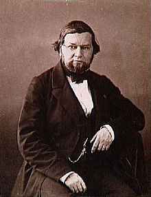
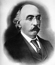
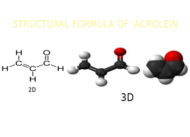

Cinnamaldehyde was isolated from cinnamon essential oil in 1834 by Jean Baptiste André Dumas and Eugène-Melchior Péligot and synthesized in the laboratory by the Italian chemist Luigi Chiozza (1828-1889) in 1854. The natural product is trans-cinnamaldehyde. The molecule consists of a benzene ring attached to an unsaturated aldehyde. As such, the molecule can be viewed as a derivative of acrolein. Its color is due to the π → π* transition: increased conjugation in comparison with acrolein shifts this band towards the visible.

Jean Baptiste André Dumas (14 July 1800 – 10 April 1884) was a French chemist, best known for his works on organic analysis and synthesis, as well as the determination of atomic weights (relative atomic masses) and molecular weights by measuring vapor densities. He also developed a method for the analysis of nitrogen in compounds.

Eugène-Melchior Péligot (24 March 1811 in Paris – 15 April 1890 in Paris), also known as Eugène Péligot, was a French chemist who isolated the first sample of uranium metal in 1841. Péligot proved that the black powder of Martin Heinrich Klaproth was not a pure metal (it was an oxide of uranium, known in chemistry as UO2). He then succeeded in producing pure uranium metal by reducing uranium tetrachloride (UCl4) with potassium metal. Today better methods have been found.

Luigi Chiozza (Trieste, 20 December 1828 - Cervignano del Friuli, 21 May 1889) was an Italian chemist and entrepreneur

Acrolein (systematic name: propenal) is the simplest unsaturated aldehyde
Biosynthesis (also called anabolism) is a multi-step, enzyme-catalyzed process where substrates are converted into more complex products in living organisms. In biosynthesis, simple compounds are modified, converted into other compounds, or join together to form macromolecules.
>
The biosynthesis of cinnamaldehyde begins with deamination of L-phenylalanine into cinnamic acid by the action of phenylalanine ammonia lyase (PAL).PAL catalyzes this reaction by a non-oxidative deamination. This deamination relies on the MIO prosthetic group of PAL. PAL gives rise to trans-cinnamic acid. In the second step, 4-coumarate: CoA ligase (4CL) converts cinnamic acid to cinnamoyl-CoA by an acid-thiol ligation. 4CL uses ATP to catalyze the formation of cinnamoyl-CoA. 4CL effects this reaction in two steps. 4CL forms a hydroxycinnamate-AMP anhydride, followed by a nucleophile attack on the carbonyl of the acyl adenylate. Cinnamoyl-CoA is reduced by NADPH catalyzed by CCR (cinnamoyl-CoA reductase) to form cinnamaldehyde.
What is synthesis in chemistry??
In chemistry, chemical synthesis is the activity of doing chemical reactions to obtain a chemical product, or some product. This happens based on physical and chemical events involving one or more reactions. Chemical synthesis is a process that can be reproduced as long as the required conditions are met. Chemical synthesis begins with the selection of chemical compounds commonly known as reagents or reactants. This process requires stirring and is carried out in a reaction vessel such as a chemical reactor or a simple reaction flask. Some reactions require certain procedures before producing the desired product. [1] The amount of product produced in a chemical synthesis is known by the term reaction gain (in English known as yield). Generally, the gain of a reaction is expressed as a weight in grams or as a percentage of the amount of product theoretically can be produced. In a chemical synthesis, there is the possibility of side reactions resulting in undesirable products. Side reactions lead to a decline in the desired product yield. If you want a product with high purity, purification step needs to be done by doing the separation process.
Several methods of laboratory synthesis exist, but cinnamaldehyde is most economically obtained from the steam distillation of the oil of cinnamon bark. The compound can be prepared from related compounds such as cinnamyl alcohol, (the alcohol form of cinnamaldehyde), but the first synthesis from unrelated compounds was the aldol condensation of benzaldehyde and acetaldehyde.cinnamoyl-CoA from cinnamaldehyde.
Sintesis from benzaldehyde and aldehyde

Cinnamaldehyde occurs widely, and closely related compounds give rise to lignin. All such compounds are biosynthesized starting from phenylalanine, which undergoes conversion. Cinnamoyl-CoA reductase is an enzyme responsible for the production of cinnamoyl-CoA from cinnamaldehyde.
1.Hydrogenation

2.Reacts cinnamaldehyde with hidrazin

3.Hidration

First report on synthesis of natural benzaldehyde over heterogeneous catalyst. ► Novel method of catalyst synthesis by combustion using glycerol as fuel. ► Reaction of cinnamaldehyde with water in methanol at 130 °C. ► 100% selectivity of natural benzaldehyde. ► The reaction follows pseudo first order kinetics.
4.Selective hydrogenation of cinnamaldehyde on a Pt nanoparticle based catalyst using the H-Cube

Selective catalytic hydrogenation of α-β-unsaturated aldehydes is an important step in the industrial preparation of fine chemicals.The hydrogenation of the C=C bond in α-β-unsaturated aldehydes is both kinetically and thermodynamically more favorable than that of the C=O group. The most significant factors determining the selectivity are: the type and the structure of the active metal, the type of the substrate, and the conditions of the reaction, namely, the hydrogen pressure and the reaction temperature. The influence of the latter factors can be easily investigated by using the H-Cube® continuous flow reactor, which is a standalone hydrogenation reactor combining continuous-flow microchemistry with on-demand hydrogen generation and a disposable catalyst cartridge (CatCart®) system.
5.Sinthesys Allybenzene from cinnamaldehyde

Allylbenzene is a relevant precursor for the synthesis of amphetamines, just like safrole is one of the main precursors for the synthesis of MDMA. Aquiring Allylbenzene can be somewhat tricky, as it is a somewhat watched chemical because many chemical supply companies know what it can be used for. Unlike safrole, allylbenzene does not occur in large amounts in nature, but a chemical relative which does is cinnamaldehyde (3-phenyl-propenal).
The essential oil of cinnamon bark consists of about 90% cinnamaldehyde, and this can be isolated by vacuum distillation (bp 250°C at ordinary pressure). Do not use the oil of cinnamon leaves, because that consists chiefly of eugenol (70-90%). Cinnamaldehyde can also be had by the reduction of cinnamic acid or the oxidation of cinnamyl alcohol.
If we could somehow reduce the aldehyde group of cinnamaldehyde to a methyl group, propenylbenzene would be formed. This cannot be done directly though, but it is possible to condense cinnamaldehyde with para-toluenesulfonylhydrazide to form cinnamaldehyde tosylhydrazone, which in turn can be reduced by sodium borohydride or sodium cyanoborohydride to allylbenzene1. These procedure is described below.
A similar procedure, using bis(benzoyloxy)borane (made in situ from benzoic acid and BH3·THF) as the reducing agent2, boasts a 95% yield (85% isolated) of allylbenzene from cinnamaldehyde tosylhydrazone.
6.Oxidation cinnamaldehyde to benzoic acid